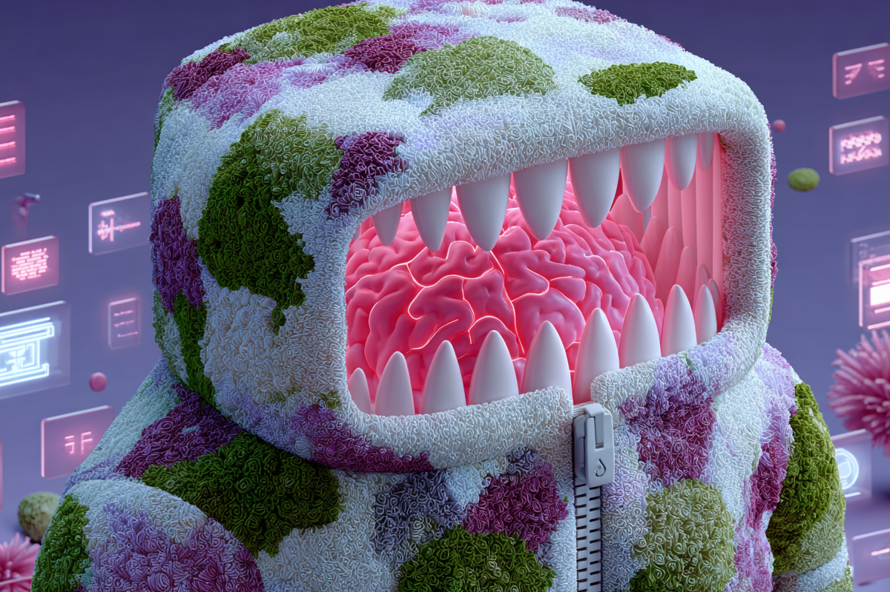
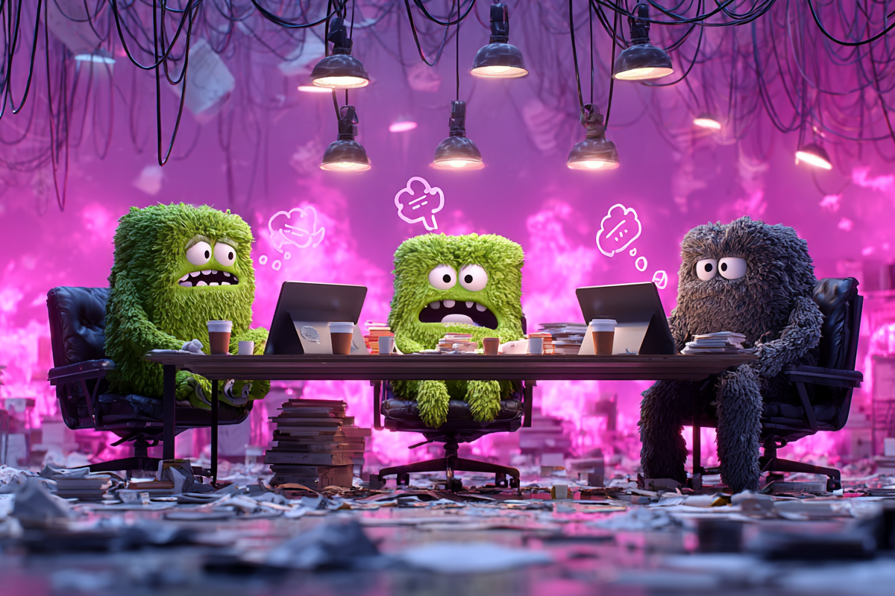
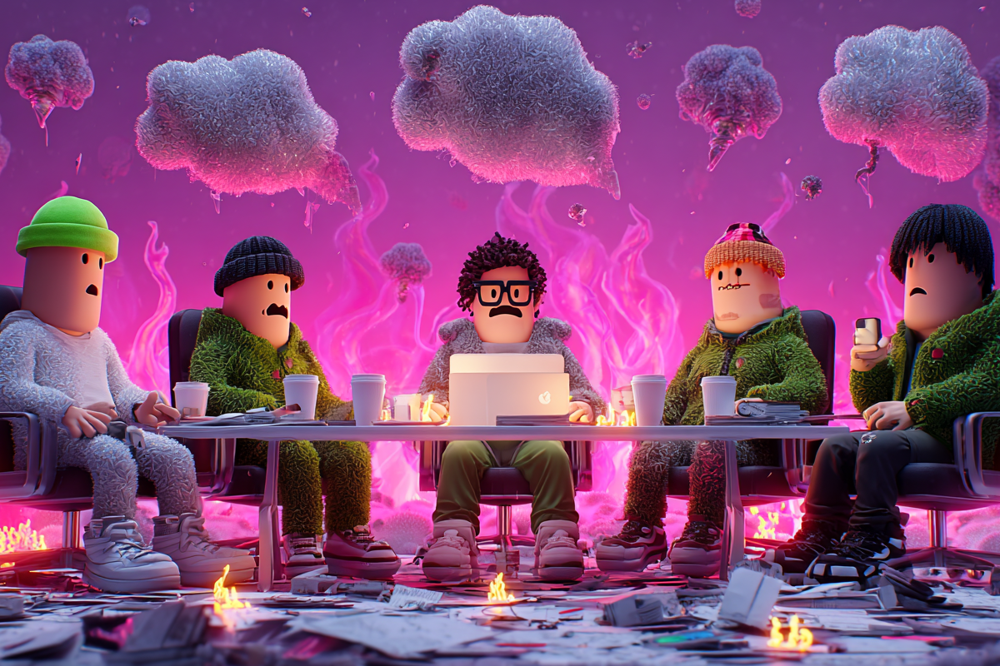
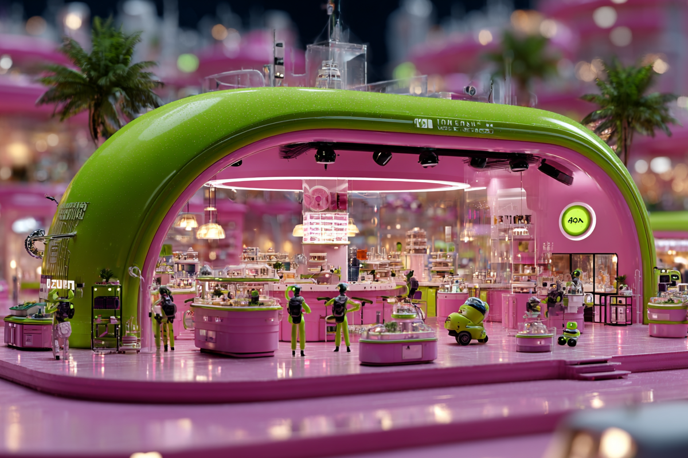

¿Meta IA nos va a jubilar a los creativos?
Publicidad sin humanos: El mundo que propone Meta IA
Publicidad sin humanos: El mundo que propone Meta IA

Luego de que Mark Zuckerberg presentara su nueva propuesta de inteligencia artificial para revolucionar la publicidad online, en las agencias creativas y departamentos de marketing de todo el mundo ya se encendieron las alarmas. Es cosa de meterse a LinkedIn.
Porque Zuckerberg ya no solo quiere saber a qué hora tomas desayuno, también quiere que tu próxima campaña de marketing la haga un robot que no duerme, no toma café y jamás se bloquea creativamente. Es así como Meta promete una IA capaz de crear todo de una campaña.
Bienvenidos al nuevo mundo según Meta AI, donde la publicidad se hace sola y los creativos… bueno, están “afinando el prompt”.

Hasta hace poco, los publicistas eran los rockstars de las ideas: slogans pegajosos, campañas virales, jingles que no se te sacaban de la cabeza. Hoy, Meta propone una IA que te hace la campaña entera: textos, imágenes, segmentación, pruebas A/B, optimización y chau, sería todo.
¿Suena cómodo? Puede ser, pero también escalofriante.
Porque si el algoritmo crea todo, ¿qué queda para nosotros? ¿Vamos a ser todos editores de los resultados que nos tira una IA? ¿O nos van a contratar solo para decirle “hazlo con más ganas, po” a un bot?

La IA ya está entre nosotros. Y sí, puede ayudarnos a crear mejor, más rápido y más personalizado, pero si no replanteamos el sentido de lo que hacemos como marketeros, vamos directo a un escenario en el que el clic vale más que la conexión humana y una experiencia memorable. Qué pena…
Porque la creatividad no debería ser solo para ver resultados, tener ventas y aumentar clics. Tampoco debería ser reemplazada por un bot que optimiza lo que ya funcionó. Porque, en ese caso, ¿dónde queda la disrupción? ¿El mensaje incómodo? ¿La historia que no vende, pero sí remueve emociones?
En Chile (y el resto de LATAM), somos secos para subirnos a la ola tech, pero algo lentos para debatir. Así que hagamos un ejercicio:

Meta no es la única en esta carrera, pero sí una de las más influyentes. Y lo que está planteando no es menor: un mundo publicitario sin humanos en el centro.
La IA no viene a reemplazarnos, sino a forzarnos a redefinir qué es lo verdaderamente creativo. Por nuestro lado, podemos asustarnos o reflexionar y actuar.
El futuro llegó y no tiene alma de creativo. Solo tiene data. Así que si vamos a dejarle algo a los bots, que sea el Excel no más.
 Tecnología
TecnologíaSi eres como yo y revisas TikTok e Instagram constantemente, te habrás dado cuenta de que estas redes son casi como un experimento social.
 Tecnología
TecnologíaHablamos mucho de inteligencia artificial. La tenemos integrada en nuestra vida, nos ayuda en nuestros trabajos y le preguntamos cosas de…
 Tecnología
TecnologíaDurante años hemos pensado en la inteligencia artificial como algo súper frío: servidores gigantes, computadores procesando datos y…